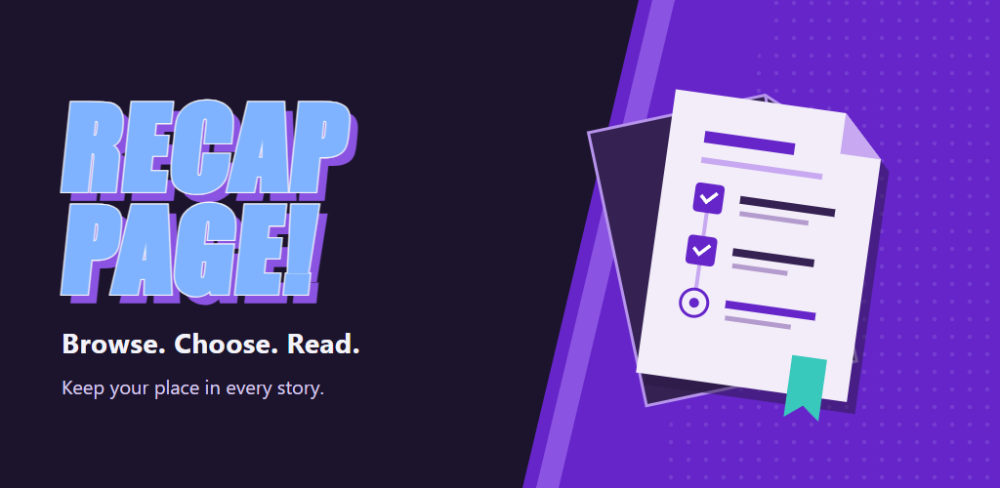
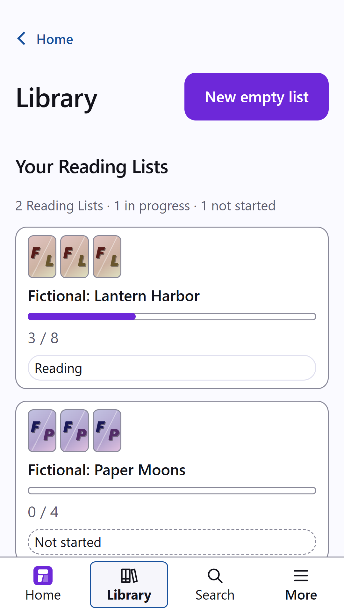
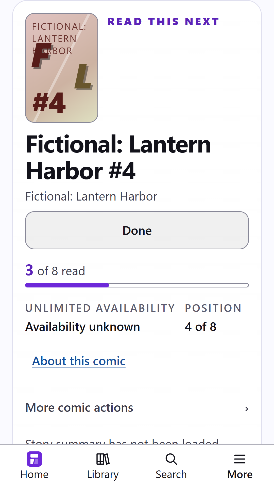

Explore Marvel
Explore Modern Timeline, Marvel Ages, Storylines, Character spotlights, Young readers, creator guides, and MCU Prep. Follow Reading Paths on Modern Timeline.
Recap Page
Find Marvel reading lists and keep track of what you've read.
Available for Windows and Android. In App Store review for iPhone and iPad.

No Recap Page account. No automatic device sync or offline comic reading.
Marvel Unlimited reading ends December 7, 2026. Until that date, Read uses its web reader when a link is recorded. From December 7, Read opens the Marvel Comics website, not a single-comic link. Your saved lists, progress and backups stay unchanged.
No computer needed. Built-in lists and saved progress work offline. Search and Marvel reading need an internet connection.


Android previews made in a desktop browser, not on a phone. Lists and progress are made up; cover art is off.
On desktop and Android.
Explore Modern Timeline, Marvel Ages, Storylines, Character spotlights, Young readers, creator guides, and MCU Prep. Follow Reading Paths on Modern Timeline.
Defer for later skips a comic in one list without marking it read. Return to deferred or earlier issues anytime.
Search issues, series, and creators. Add comics by hand, write notes, and hide descriptions until you're ready.
This is a historical record, not availability in Marvel Comics. Missing guide entries stay visible.
Save a JSON backup or preview a Markdown checklist. Share an order without notes, reading history, or availability choices.
An example with made-up progress.
An issue marked read stays read across lists. Each list keeps its own order.
Desktop views with cover art off.


Install and update through Microsoft Store.
Open Microsoft StoreAndroid 8 or later, with an up-to-date Android System WebView.
Open Google PlayUnzip, then run Start on Windows.cmd.
Download for WindowsRequires Node.js 20 or newer.
Source setup guideIn App Store review. Not available yet.
Open Recap Page Already running?
Uninstalling the Android app deletes its saved data. Save and check a backup first.